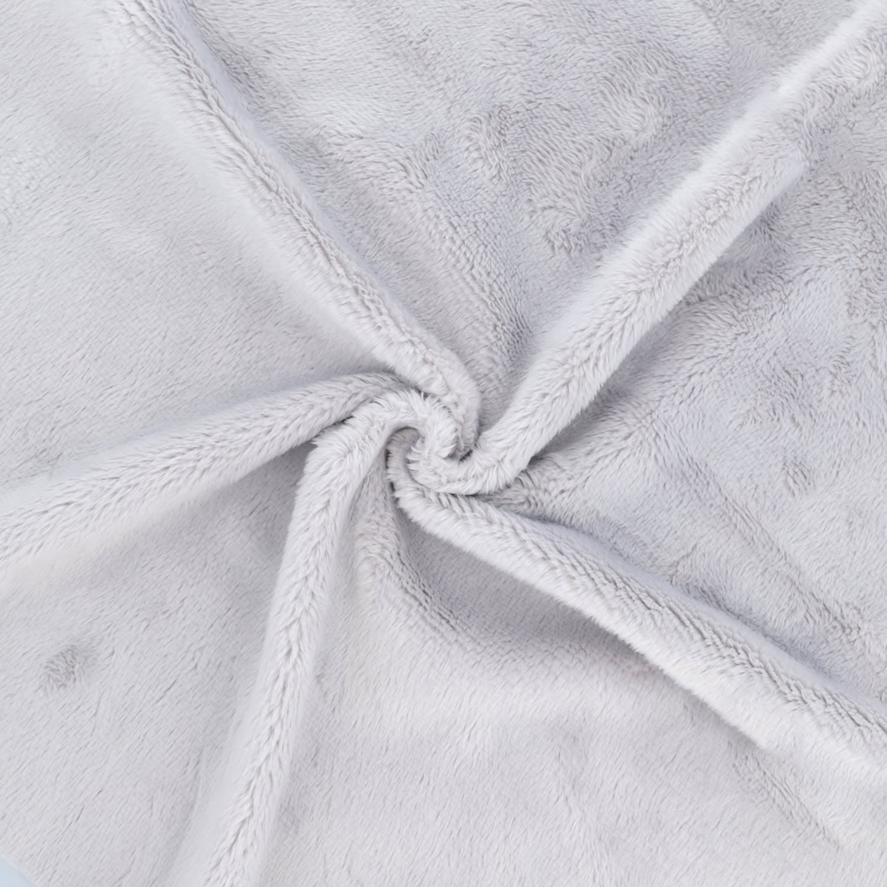
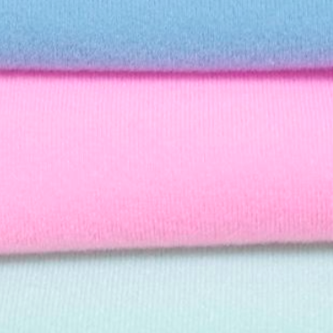

布素材紹介
hug＊hanaで使用している主な布素材の色見本をご案内しています。
カラーを選べるのはソフトボア（1mm・5mm）のみです。※色見本PDFが開きます
♡

ソフトボア（1mm）
ふんわりとした短毛素材。ぬいぐるみの肌や髪に多く使用しています。店主のイチオシです。
カラー選択できます

ソフトボア（5mm）
1mmよりも長い短毛素材。ぬいぐるみの髪に多く使用しています。厚みがあり、小さいサイズに使用するともふもふな仕上がりになります。
カラー選択できます

トイクロス
表面が起毛した素材で、ソフトボアと比べるとサラサラしています。ふわふわ感は控えめ。主にぬいぐるみの肌に使用されており、プライズぬいではおなじみ。
カラー選択できません